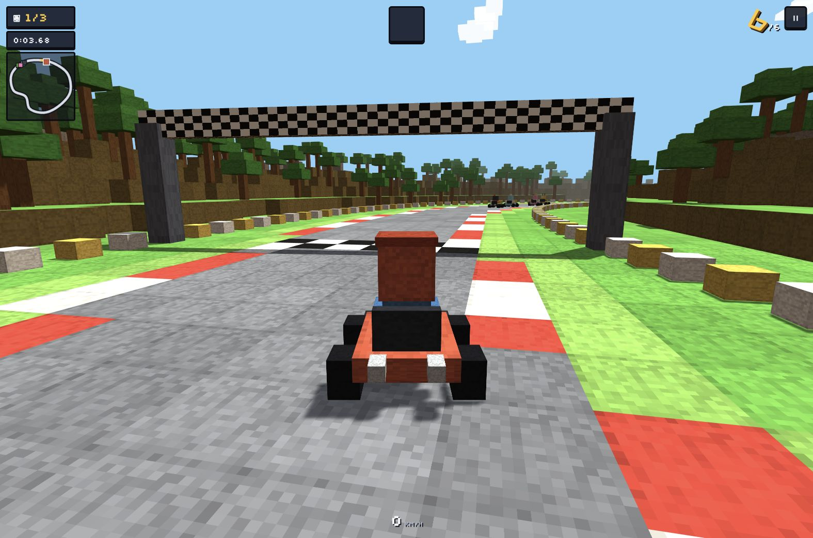

game
各种有趣、奇怪的游戏，都从这里开始。
玩家账号
游客可直接玩；登录后保存云端成绩。
账号名称会出现在公开排行榜。MVP 暂不提供找回密码，请妥善保存。
赛道档案
每场 3 圈 · 6 台车 · 跑道宽 28 游戏单位 · 休闲 / 标准 / 极速
| 赛道 | 环境 | 特点 |
|---|---|---|
| 青草环线 约 884 游戏单位 / 圈 | 湖泊、橡树林 | 环线与连续转弯 |
| 赤砂峡谷 约 1172 游戏单位 / 圈 | 台地、仙人掌 | 多处方向变化 |
| 雪峰回廊 约 1080 游戏单位 / 圈 | 冰湖、松林 | 曲折回廊 |
🏆 成绩排行榜
| 名次 | 玩家 | 最好用时 | 答题正确率 |
|---|
综合榜与单科榜分开；答题时比赛计时暂停。休闲社区榜使用客户端计时，并有基础提交校验。